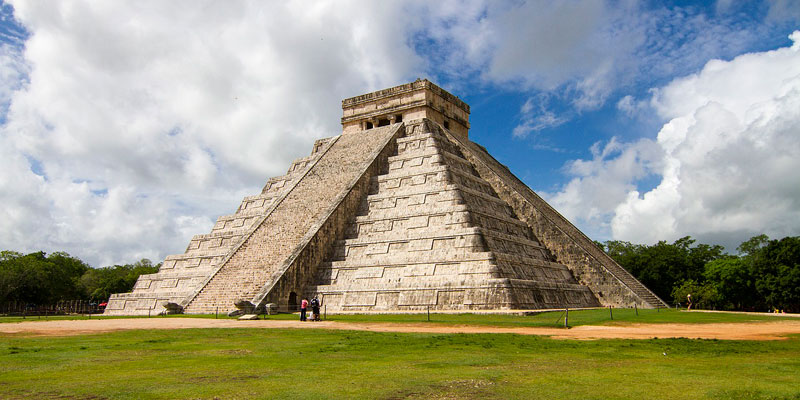

Yucatán

La mezcla del origen indígena y la influencia hispánica caracterizan a las manifestaciones arquitectónicas de Yucatán, compartiendo el espacio urbano con las influencias de otras culturas como la mexicana, la francesa, la italiana y la estadounidense.
Pirámides de Chichen-Itzá
El recinto arqueológico ocupa 15 km2, es Patrimonio de la Humanidad desde 1998 y constituye uno de los testimonios mejor preservados de la civilización maya. Este templo es el edificio principal de la ciudad de Chichén Itzá.